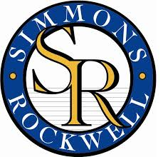
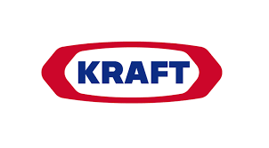

Our Sponsors:


Special thanks to Simmons Rockwell and and 5-6 coach Geoff Crossley. They have been a proud supporter of HYLC over the last several years. This year they donated $1000!
Thanks to Jolene Deragon for facilitating a $100 donation from Kraft Foods. Jolene's son, Joel is on the 5-6 team.
Thanks to Geoff Woodworth who secured a $100 donation from NYSCOPBA. Geoff's son, Braden, is on the K-2 team.
The Horseheads Youth Lacrosse Club is proud to donate the proceeds from club pictures in the amount of $325 to the family of our dear friend Brendan McCarthy. Brendan was a student, teacher, and coach in the Horseheads district and huge proponent of youth sports. He recently lost his battle with ALS and will forever be in our hearts. He leaves behind a wife and four small children.
The board approved donations of $500 each to the boys' and girls high school lacrosse programs. Each program received the donation to help fund an assistant coaching position that had been cut by the school district. Without an assistant coach, one coach would be responsible for nearly 20 players, and that creates a safety concern. Make your voice heard and help protect Horseheads Athletics. Regularly attend school board meetings to make board members aware of the importance of adequate supervision and funding for our athletes and programs.